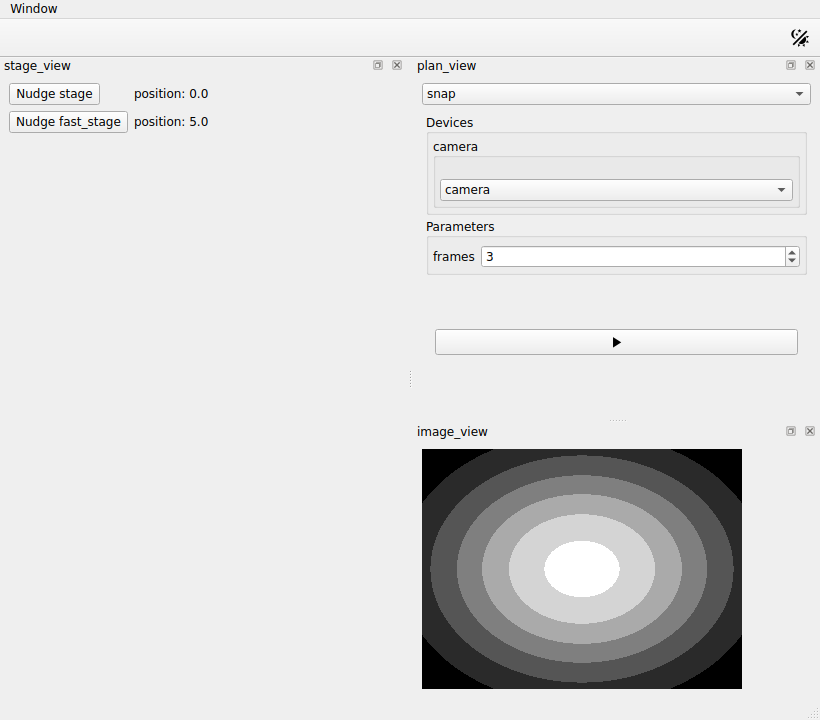

Acquiring images¶
In this tutorial you add a camera to the session, and a presenter that offers a plan to acquire with it. You find the frames on disk, and show the last one in the window. It continues from Building controls for a plan.
The camera is a simulated one that ships with
ophyd-async, so you need no
hardware and write no device. The presenter and the view of the plans stay as
they are: the session passes them the new plan.
Before you start¶
What you need
h5py, which the camera writes its file with and the session reads it
with. It does not come with redsun:
h5py comes without information on its types, which mypy reports as
an error. If you keep checking the types of the script, add these lines
to pyproject.toml first:
Open first_session.py, and add these imports below the ones it has:
from urllib.parse import urlsplit
from urllib.request import url2pathname
import bluesky.plans as bp
import h5py
import numpy as np
from bluesky.protocols import Readable, Triggerable
from event_model import DocumentRouter, StreamResource
from ophyd_async.sim import SimBlobDetector
from qtpy.QtGui import QImage, QPixmap
Nothing you wrote so far changes in this tutorial either.
1. Say what a camera is¶
A plan says what it needs from a device, as the plan of the stages did. Add a
second protocol below HasPosition:
A camera is a device that can be read, and triggered to take a frame. Both
protocols come from bluesky. The
stages can be read and not triggered, so they are not cameras.
2. Offer a plan for it¶
Add a presenter below PlanView:
class CameraPresenter(DocumentRouter):
sig_frame = Signal(object)
def __init__(self, name: str, *, cameras: DevicesOf[Camera]) -> None:
super().__init__()
self.name = name
self.cameras = cameras
self.written: tuple[str, str] | None = None
def snap(self, camera: Camera, frames: int = 3) -> MsgGenerator[Any]:
return (yield from bp.count([camera], num=frames))
def plan_map(self) -> Mapping[str, PlanEntry]:
return {"snap": {"plan": self.snap}}
def stream_resource(self, doc: StreamResource) -> StreamResource:
if doc["data_key"] in self.cameras:
self.written = (doc["uri"], doc["parameters"]["dataset"])
return doc
@slot
def show_last(self) -> None:
if self.written is not None:
uri, dataset = self.written
with h5py.File(url2pathname(urlsplit(uri).path), "r") as file:
self.sig_frame.emit(file[dataset][-1])
self.written = None
It offers a plan, as StagePlans does: snap wraps
count, a plan bluesky already has.
It also follows the plan while it runs. The
RunEngine describes what happens in
documents, and a DocumentRouter
receives each kind in a method of its name. This one reads
StreamResource, in which a
device says which file it wrote. Of the two the camera sends in a run, the one
named camera holds its frames. show_last turns the URI of that file into a
path with the two functions of urllib, opens it, and sends the last frame
with sig_frame, once the plan has ended.
3. Run it¶
Add these two lines to the session, the first among the devices and the second among the presenters. A device that already exists needs no code, only its line:
Run the script:
The list of the plans has a second entry, snap. Choose it: the view shows
the plan widget of snap, with a list that holds camera and an input for
frames. You connected nothing: CameraPresenter offers a plan, so the
session passed it to PlanPresenter and to PlanView. It is a
DocumentRouter, so the session passed it to PlanPresenter a second time,
among callbacks.
Press Run: the view greys out and comes back. The frames are acquired, and nothing shows them yet. Close the window.
4. Show the frame¶
Add a view below CameraPresenter:
class ImageView(QWidget):
placement: Placement = Dock("right")
def __init__(self, name: str, parent: QWidget) -> None:
super().__init__(parent)
self.name = name
self.image = QLabel("No image yet")
QVBoxLayout(self).addWidget(self.image)
@slot
def show_frame(self, frame: object) -> None:
values = np.asarray(frame, dtype=float)
low, high = values.min(), values.max()
grey = (255 * (values - low) / max(high - low, 1.0)).astype(np.uint8)
height, width = grey.shape
image = QImage(
grey.tobytes(), width, height, width, QImage.Format.Format_Grayscale8
)
self.image.setPixmap(QPixmap.fromImage(image.copy()))
show_frame turns the frame into an image, and stretches its values over the
whole scale of greys first, since the camera writes small numbers.
5. Add it to the session¶
Add the highlighted lines. You already have the first two:
class FirstSession(QtSession):
config = "session.yaml"
stage: AsDevice[MyStage]
fast_stage: AsDevice[FastStage]
camera: AsDevice[SimBlobDetector]
stage_ctrl: AsPresenter[StagePresenter]
stage_plans: AsPresenter[StagePlans]
plan_ctrl: AsPresenter[PlanPresenter]
camera_ctrl: AsPresenter[CameraPresenter]
stage_view: AsView[StageView]
plan_view: AsView[PlanView]
image_view: AsView[ImageView]
def wire(self) -> Iterator[Link]:
yield self.stage_view.sig_nudge, self.stage_ctrl.nudge
yield self.stage.position, self.stage_view.show_reading
yield self.fast_stage.position, self.stage_view.show_reading
yield self.plan_view.sig_run, self.plan_ctrl.run
yield self.plan_ctrl.sig_finished, self.plan_view.on_finished
yield self.plan_ctrl.sig_started, self.path_provider.set_plan
yield self.plan_ctrl.sig_finished, self.path_provider.reset_plan
yield self.plan_ctrl.sig_finished, self.camera_ctrl.show_last
yield self.camera_ctrl.sig_frame, self.image_view.show_frame
if __name__ == "__main__":
FirstSession().run()
The first two links reach the
path provider of the session,
self.path_provider, which tells the camera
where to write.
set_plan gives it the
name of the plan that is about to run, and
reset_plan clears it
afterwards.
6. Acquire¶
Choose snap in the list of the plans and press Run. After a moment the
last frame appears:

7. Find the files¶
The frames are in the folder redsun keeps for you, under the name of the
session and the date:
redsun/
`-- first-session/ the name session.yaml gives the session
`-- 2026-09-28/ the day of the acquisition
`-- camera/
`-- snap_00000.h5
| Platform | Where redsun/ is |
|---|---|
| Windows | %LOCALAPPDATA%\redsun |
| macOS | ~/Library/Application Support/redsun |
| Linux | ~/.local/share/redsun |
Open the folder, then press Run again: snap_00001.h5 appears beside the
first. The files are named after the plan. The one of step 3 is there too, as
unknown_00000.h5: the path provider had not been told the name of the plan.
The session chose the folder and the name, and created the folder. The camera
wrote the file, in the format it chose. redsun itself writes no acquisition
data.
The whole script
"""The session built in the "Acquiring images" tutorial."""
from __future__ import annotations
from collections.abc import Iterator, Mapping # noqa: TC003
from typing import Any, Protocol, runtime_checkable
from urllib.parse import urlsplit
from urllib.request import url2pathname
import bluesky.plan_stubs as bps
import bluesky.plans as bp
import h5py
import numpy as np
from bluesky.protocols import Readable, Reading, Triggerable
from bluesky.utils import MsgGenerator # noqa: TC002
from event_model import DocumentRouter, StreamResource
from ophyd_async.core import SignalRW, StandardReadable, soft_signal_rw
from ophyd_async.sim import SimBlobDetector # noqa: TC002
from psygnal import Signal
from qtpy.QtGui import QImage, QPixmap
from qtpy.QtWidgets import (
QComboBox,
QFormLayout,
QLabel,
QPushButton,
QStackedWidget,
QVBoxLayout,
QWidget,
)
from redsun import (
AsDevice,
AsPresenter,
AsView,
CallbackType,
DeviceMapping,
DevicesOf,
HasPlans,
Link,
Placement,
PlanEntry,
slot,
)
from redsun.engine import RunEngine
from redsun.presenter.plan_spec import (
PlanSpec,
collect_arguments,
create_plan_spec,
resolve_arguments,
)
from redsun.qt import Dock, QtSession
from redsun.view.qt.utils import PlanWidget, create_plan_widget
class MyStage(StandardReadable):
def __init__(self, name: str = "", *, units: str = "mm") -> None:
with self.add_children_as_readables():
self.position = soft_signal_rw(float, units=units)
super().__init__(name=name)
class FastStage(StandardReadable):
def __init__(self, name: str = "", *, units: str = "mm") -> None:
with self.add_children_as_readables():
self.position = soft_signal_rw(float, initial_value=5.0, units=units)
self.speed = soft_signal_rw(float, initial_value=10.0)
super().__init__(name=name)
@runtime_checkable
class HasPosition(Protocol):
position: SignalRW[float]
@runtime_checkable
class Camera(Readable[Any], Triggerable, Protocol): ...
class StagePresenter:
def __init__(
self, name: str, *, stages: DevicesOf[HasPosition], step: float = 1.0
) -> None:
self.name = name
self.stages = stages
self.step = step
@slot
async def nudge(self, stage: str) -> None:
position = await self.stages[stage].position.get_value()
await self.stages[stage].position.set(position + self.step)
class StageView(QWidget):
placement: Placement = Dock("left")
sig_nudge = Signal(str)
def __init__(self, name: str, parent: QWidget) -> None:
super().__init__(parent)
self.name = name
self.rows = QFormLayout(self)
self.labels: dict[str, QLabel] = {}
def add_row(self, stage: str) -> None:
button = QPushButton(f"Nudge {stage}")
button.clicked.connect(lambda: self.sig_nudge.emit(stage))
self.labels[stage] = QLabel()
self.rows.addRow(button, self.labels[stage])
@slot
def show_reading(self, reading: dict[str, Reading[float]]) -> None:
for signal, entry in reading.items():
stage = signal.removesuffix("-position")
if stage not in self.labels:
self.add_row(stage)
self.labels[stage].setText(f"position: {entry['value']}")
class StagePlans:
def __init__(self, name: str) -> None:
self.name = name
def walk(
self, stage: HasPosition, steps: int = 5, size: float = 1.0
) -> MsgGenerator[None]:
for _ in range(steps):
position = yield from bps.rd(stage.position)
yield from bps.mv(stage.position, position + size)
def plan_map(self) -> Mapping[str, PlanEntry]:
return {"walk": {"plan": self.walk}}
class PlanPresenter:
sig_started = Signal(str)
sig_finished = Signal()
def __init__(self, name: str, *, devices: DeviceMapping) -> None:
self.name = name
self.devices = devices
self.engine = RunEngine()
self.plans: dict[str, PlanEntry] = {}
self.specs: dict[str, PlanSpec] = {}
def setup(
self,
providers: Mapping[str, HasPlans],
callbacks: Mapping[str, CallbackType],
) -> None:
for component in providers.values():
self.plans.update(component.plan_map())
for plan, entry in self.plans.items():
self.specs[plan] = create_plan_spec(entry["plan"], self.devices)
for callback in callbacks.values():
self.engine.subscribe(callback)
@slot
def run(self, plan: str, values: dict[str, Any]) -> None:
resolved = resolve_arguments(self.specs[plan], values, self.devices)
args, kwargs = collect_arguments(self.specs[plan], resolved)
self.sig_started.emit(plan)
future = self.engine(self.plans[plan]["plan"](*args, **kwargs))
future.add_done_callback(lambda _: self.sig_finished.emit())
class PlanView(QWidget):
placement: Placement = Dock("right")
sig_run = Signal(str, dict)
def __init__(self, name: str, parent: QWidget) -> None:
super().__init__(parent)
self.name = name
self.chooser = QComboBox()
self.pages = QStackedWidget()
self.chooser.currentIndexChanged.connect(self.pages.setCurrentIndex)
layout = QVBoxLayout(self)
layout.addWidget(self.chooser)
layout.addWidget(self.pages)
self.widgets: dict[str, PlanWidget] = {}
def setup(self, providers: Mapping[str, HasPlans], devices: DeviceMapping) -> None:
for component in providers.values():
for entry in component.plan_map().values():
self.add_plan(create_plan_spec(entry["plan"], devices))
def add_plan(self, spec: PlanSpec) -> None:
widget = create_plan_widget(
spec, run_callback=lambda: self.ask_to_run(spec.name)
)
self.widgets[spec.name] = widget
self.chooser.addItem(spec.name)
self.pages.addWidget(widget.group_box)
def ask_to_run(self, plan: str) -> None:
self.setEnabled(False)
self.sig_run.emit(plan, self.widgets[plan].parameters)
@slot
def on_finished(self) -> None:
self.setEnabled(True)
class CameraPresenter(DocumentRouter):
sig_frame = Signal(object)
def __init__(self, name: str, *, cameras: DevicesOf[Camera]) -> None:
super().__init__()
self.name = name
self.cameras = cameras
self.written: tuple[str, str] | None = None
def snap(self, camera: Camera, frames: int = 3) -> MsgGenerator[Any]:
return (yield from bp.count([camera], num=frames))
def plan_map(self) -> Mapping[str, PlanEntry]:
return {"snap": {"plan": self.snap}}
def stream_resource(self, doc: StreamResource) -> StreamResource:
if doc["data_key"] in self.cameras:
self.written = (doc["uri"], doc["parameters"]["dataset"])
return doc
@slot
def show_last(self) -> None:
if self.written is not None:
uri, dataset = self.written
with h5py.File(url2pathname(urlsplit(uri).path), "r") as file:
self.sig_frame.emit(file[dataset][-1])
self.written = None
class ImageView(QWidget):
placement: Placement = Dock("right")
def __init__(self, name: str, parent: QWidget) -> None:
super().__init__(parent)
self.name = name
self.image = QLabel("No image yet")
QVBoxLayout(self).addWidget(self.image)
@slot
def show_frame(self, frame: object) -> None:
values = np.asarray(frame, dtype=float)
low, high = values.min(), values.max()
grey = (255 * (values - low) / max(high - low, 1.0)).astype(np.uint8)
height, width = grey.shape
image = QImage(
grey.tobytes(), width, height, width, QImage.Format.Format_Grayscale8
)
self.image.setPixmap(QPixmap.fromImage(image.copy()))
class FirstSession(QtSession):
config = "session.yaml"
stage: AsDevice[MyStage]
fast_stage: AsDevice[FastStage]
camera: AsDevice[SimBlobDetector]
stage_ctrl: AsPresenter[StagePresenter]
stage_plans: AsPresenter[StagePlans]
plan_ctrl: AsPresenter[PlanPresenter]
camera_ctrl: AsPresenter[CameraPresenter]
stage_view: AsView[StageView]
plan_view: AsView[PlanView]
image_view: AsView[ImageView]
def wire(self) -> Iterator[Link]:
yield self.stage_view.sig_nudge, self.stage_ctrl.nudge
yield self.stage.position, self.stage_view.show_reading
yield self.fast_stage.position, self.stage_view.show_reading
yield self.plan_view.sig_run, self.plan_ctrl.run
yield self.plan_ctrl.sig_finished, self.plan_view.on_finished
yield self.plan_ctrl.sig_started, self.path_provider.set_plan
yield self.plan_ctrl.sig_finished, self.path_provider.reset_plan
yield self.plan_ctrl.sig_finished, self.camera_ctrl.show_last
yield self.camera_ctrl.sig_frame, self.image_view.show_frame
if __name__ == "__main__":
FirstSession().run()
What you built¶
A session with a camera beside its two stages, and a second plan to choose in
the view of the plans. Its plan widget acquires as many frames as you ask
for, the last one shows in the window, and every acquisition is a file of its
own on disk, in a folder named after the session and the day. The plan
reached its widget and the RunEngine without a line of yours joining them.
Next steps¶
- Scanning a stage with the camera is the next tutorial: it adds a plan that uses a stage and the camera together.
- Write a session file shows how to keep the files in another folder.
- Components explains how the path of a file is made.
- How to keep a catalog of runs makes the acquisitions searchable.